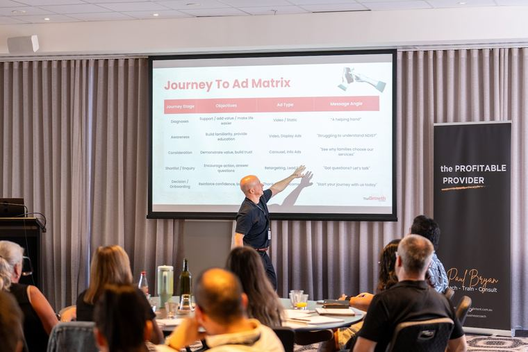
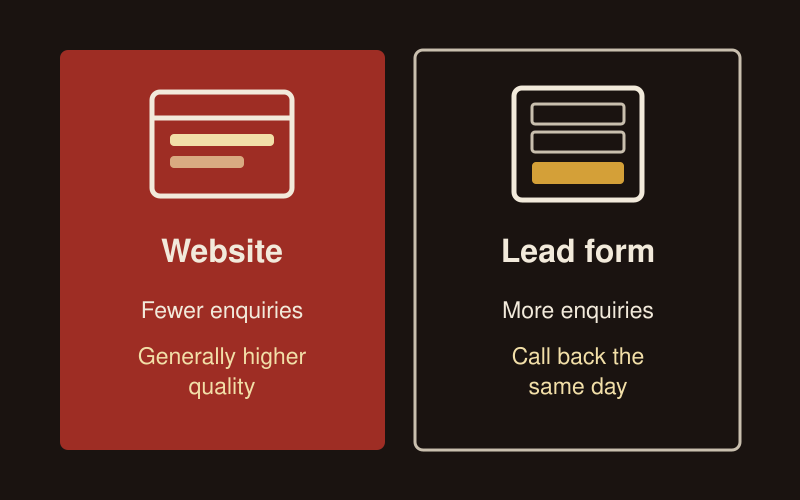
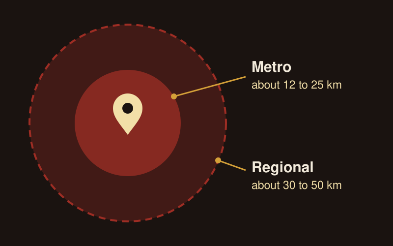
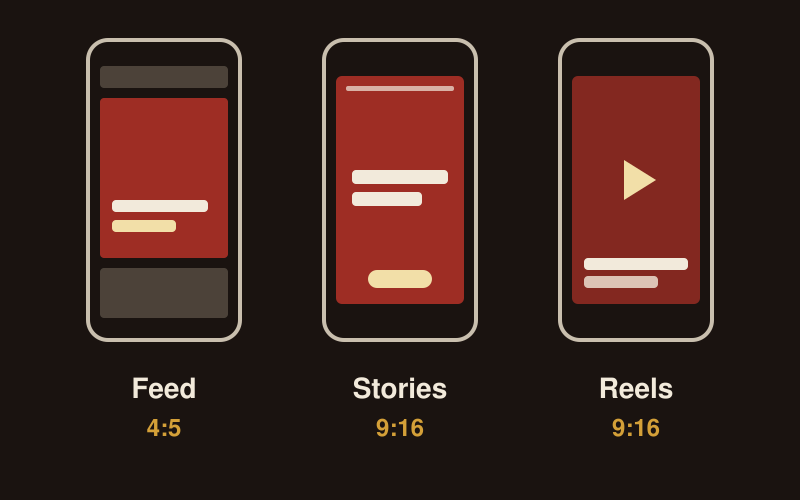
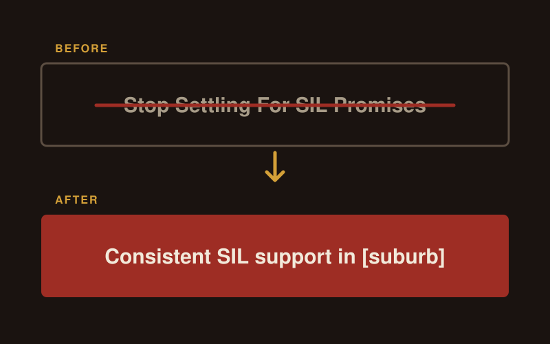
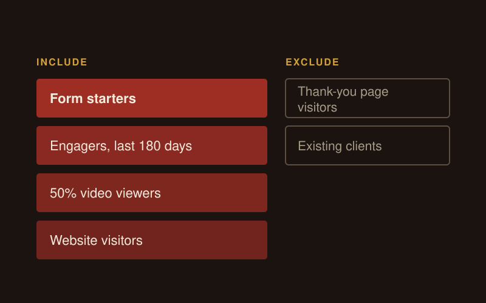
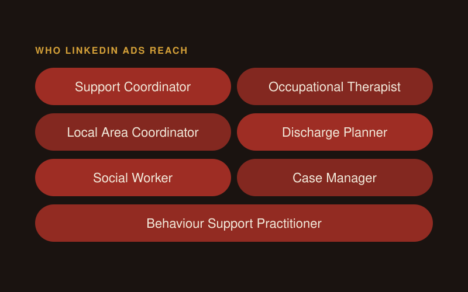

NDIS Google Ads
Reaching participants takes more than showing up. How Google Ads connects you with people actively searching for your services, from keyword selection to measuring what works.
Read more
To run NDIS Facebook ads well, send people to a page on your own website first and test Facebook lead forms alongside it, put 7 to 10 real, varied ads in one ad set, target a set radius around your service, and let the creative do the targeting, because Meta (the company behind Facebook and Instagram) won't let you target disability. Instagram runs from the same campaign with vertical video. LinkedIn ads are a separate channel for reaching support coordinators, allied health and hospital teams, never participants.

I run Facebook, Instagram and LinkedIn ads for NDIS providers as part of my NDIS marketing work. This is the setup I use, the copy rules I hold every ad to, and the compliance checklist each ad passes before it goes live.
Yes, when your service suits people who aren't searching yet, and you can show it with real photos and video. Facebook and Instagram reach families, participants and support workers before they type anything into Google, and a well-built campaign can bring first enquiries within 7 to 10 days. Referral relationships and SEO take months to build.
Facebook and Instagram ads lead the way when:
They play a supporting role when Google Ads already brings most enquiries in, or when referrals drive your growth and the ads keep your name in front of the people you're already talking to.
They are a poor fit when you can't show your service without risking someone's privacy and have no photos of your own, or when you need 50 or more enquiries a month from one small area on a small budget.
Three groups, and each one reads your ad differently.
| Who reads it | Where they are | What they respond to |
|---|---|---|
| Participants enquiring for themselves | Facebook and Instagram | Dignity, everyday detail, the life they want to live. Write to them as an adult making a choice |
| Families: parents, partners, adult children | Mostly Facebook | Proof the support is good, and relief from carrying everything themselves |
| Support coordinators, allied health, hospital teams | LinkedIn, and some on Facebook | Evidence of competence, compliance, and that referring you won't come back on them |
Participants enquire directly for therapy, community support, plan management, day programs and digital products. For SIL, SDA and complex care, families and referrers usually make the first contact. Decide who each ad speaks to before you write it.
Families and referrers both carry two things at once. A parent wants the support to be right for their son or daughter, and wants to sleep at night. A support coordinator wants the placement to work for their client, and needs it to reflect well on their judgement. Copy that speaks to both sides converts better.
Both work, and both are worth testing. I lead with the website, because the people who enquire there have read about you first, so the enquiries are generally higher quality. Lead forms bring more enquiries at a lower cost each, from people who often know less about you.
| Website conversion campaign | Facebook lead form | |
|---|---|---|
| Enquiries | Fewer | More |
| Quality | Generally higher, the person has read your page | Mixed, the form fills in from their Facebook profile |
| Speed to launch | Needs a page that works and tracks enquiries | Quick, everything sits inside Facebook |
| Follow-up | Normal response times work | Needs a fast call back, the same business day |
| Best for | A strong website and a service people want to read about | A page that isn't ready yet, an urgent vacancy, or a new area you're testing |
To run a website campaign well:
To run a lead form well:
To test them against each other, run the same ads to both and compare what each one costs per qualified enquiry, using your own records of who was suitable. Cost per enquiry on its own will favour the form.

You go broad on location and age, and Meta uses your creative to find the right people. Meta removed detailed targeting options linked to health causes in January 2022, so there is no "disability" box to tick.
Meta's system works out who to show each ad to from who stops, watches and clicks. A family member who sees an ad with a support worker cooking dinner with someone at home is more likely to stop than a 22-year-old with no link to the sector. Feed the system enough variety and it learns who your audience is.
Here is the setup I start with:
| Setting | What I use |
|---|---|
| Location | A pin on the service or the house, with a radius |
| Radius, metro | About 12 to 25 km |
| Radius, regional | About 30 to 50 km |
| Age | Broad, for example 45 to 75 for parents of adult children, 30 to 55 for parents of younger children |
| Ad sets | One for new audiences, and a second for retargeting once you have people to retarget |
| Number of ads | 7 to 10 in one ad set |
| Formats | A mix of video, carousel and static images |
| Placements | Facebook and Instagram, with Audience Network turned off |
| Starting budget | $1,000 a month in ad spend, then review the numbers |
I never set targeting state-wide for a local service. You pay to reach families who would never travel to you. Exclude suburbs inside the radius that your team can't get to, and upload your existing clients as a list so you can exclude them.
Audience Network shows your ads on other apps and websites outside Facebook and Instagram. You can't control where they appear, so I switch it off for every NDIS account.
Keep the campaign simple. Splitting a small budget across several ad sets by age, interest or lookalike gives each one too little spend to learn from. Add a separate ad set only for retargeting, or for a second location that is a different market, such as another city.

Ideally, put 7 to 10 ads in one ad set and let Meta pick the ones that work. Give it about 3 days before you judge anything, because the first day or two of results swing around.
Then check frequency, which is the average number of times each person has seen an ad. When an ad's frequency gets near 3.5, the same families are seeing it over and over, so turn it off and rotate in a new one. In a small area you will hit this sooner. But this is a rule of thumb. If it's still driving conversions at an acceptable cost, watch it closely but keep it running.
When you make the new ad, change more than the words. Meta's ad system, which it calls Andromeda, groups ads that look alike. If you change only the text on a static image, Meta may treat it as the same ad. Change the text and the colour, or better, use a different photo or a different format. Add 2 to 4 new ads a month, keep the ones that are working, and keep a few approved ads ready to go so a tired ad never stays on because nothing is ready.
A few more rules for the first month:
Two more habits keep an account honest:
Instagram ads run from the same campaign as your Facebook ads, so you set them up once. The difference is the creative. Instagram's Stories and Reels fill the whole phone screen, and Meta recommends a 9:16 vertical format for both.
| Instagram placement | What works |
|---|---|
| Feed | 4:5 images and short video, the same as Facebook feed |
| Stories | 9:16 vertical, one idea per frame, about 15 seconds |
| Reels | 9:16 vertical video, 15 to 30 seconds, with captions burned on |
| Explore | Runs from the same feed and Reels creative |
To set it up:
Instagram suits the genuine content that works best in this sector: a support worker's phone video of their week, a walk through a home in daylight, someone showing the garden they planted. In my experience Instagram reaches more participants enquiring for themselves, younger family members and support workers, so write some ads to them directly.

Say what life with your support looks like, in the words a family would use. For a vacancy ad, I tell providers to "forget the four walls". Families can see a bedroom in the photo. Tell them what the care inside is like and who the house suits: young gamers, quiet readers, a household that does pasta on Friday night.
Specific detail is what makes an ad believable. Generic lines read as noise:
| Generic | Specific |
|---|---|
| Independent living support | Tom does his own shopping on Thursdays. His support worker waits at the car |
| Our dedicated team of professionals | Sarah has six years with us and studied social work |
| Community participation programs | Wednesday mornings at the pool, Fridays at the men's shed |
The specifics have to come from the provider, from what happens on a Tuesday. If you make them up, the ad reads as made up.
Use a mix of messages across your 7 to 10 ads:
| Message type | What it sounds like |
|---|---|
| Their situation | The pressure a family is under right now, described from their side |
| Optimism | What is working for people you support today, stated plainly |
| Aspiration | The life being lived: the routine, the outings, the friendships |
A set built only on problems wears your audience out. Build each set from all three.
Leave other providers out of it. An ad that says "Stop Settling For SIL Promises" knocks the sector, insults the family's past choice and puts coordinators off. I rewrote that ad as "Consistent SIL support in [suburb]". It says what you offer, where, and it passes review.
Three creative rules I hold every ad to:
For carousels, use 3 to 5 cards: the hook on the first card, the next step on the last, and one complete idea on each card in between.

Build a retargeting campaign aimed at the people who have already engaged with you, and give them a direct ad with a clear offer and a clear way to enquire. These people know who you are, so you don't need to warm them up again.
| Audience | What to include |
|---|---|
| Form starters | People who opened your form and didn't finish it, the most valuable group |
| Engagers | Anyone who engaged with your Facebook page or Instagram account in the last 180 days |
| Video viewers | People who watched at least 50% of one of your videos |
| Website visitors | Everyone who visited your site |
| Exclude | Anyone who reached the thank-you page, because they have already enquired, and your existing clients |
Set the campaign's conversion goal to the thank-you page, so Meta looks for more people who enquire. Turn off Advantage Plus audience for retargeting, because it widens the audience beyond the people you built it for.
Write the copy for someone who already knows you, with the offer and the next step up front: "A room is opening in [suburb]. Call [first name] to arrange a visit." Never refer to the person's disability or to the fact they have seen you before. Meta's personal attributes policy bans ads that assert or imply someone has a disability or a health condition, and "We noticed you looked at our SIL homes" breaks it.
SIL and SDA decisions can take two to six months from first enquiry to move-in. A family who watched your video six weeks ago and never enquired is still worth reaching, so keep a small retargeting budget running month after month.

Yes, when you need referrals from support coordinators, allied health or hospital teams and you want to reach them beyond your own network. LinkedIn is the one platform where you can target people by job title. It never reaches participants directly, so every LinkedIn ad speaks to professionals.
Write to them as professionals: "your client", "the participant you support", never "you" as if they need support themselves. Tell them what they need to know before they refer: who the service suits, where it is, how intake works, and who they'll speak to.
Here is how I set up a referrer campaign:
| Setting | What I use |
|---|---|
| Job titles | Support Coordinator, Occupational Therapist, Local Area Coordinator, Discharge Planner, Social Worker, Case Manager, Behaviour Support Practitioner |
| Location | The metro area or region you deliver in |
| Audience size | Usually 2,000 to 15,000 people. LinkedIn needs at least 300 to run |
| Audience expansion | Off, because it pulls in people with unrelated job titles |
| Objective | Website conversions to a referrer page, or a LinkedIn Lead Gen Form for a referral pack or vacancy list |
| Formats | Single image with a strong caption, or short video from a founder or clinical lead |
| Time to judge | Six to eight weeks |
LinkedIn costs more per click than Facebook, so plan for around $80 to $150 a day before you expect useful data. Across the NDIS accounts I've run, a referrer lead on LinkedIn costs $80 to $200. Judge LinkedIn on qualified conversations: one qualified support coordinator conversation for every $200 to $400 of spend is a strong result for an NDIS provider.
Install the LinkedIn Insight Tag on your site so you can track enquiries and retarget referrers who visited.
Two styles of creative work on LinkedIn. Use polished creative for a clear offer, such as a case study or a vacancy pack, and raw phone video for an opinion or a view behind the scenes, with the caption doing the work. The ads that fail sit in the middle: a polished ad that looks amateur, or a raw one that feels staged.
Start with organic LinkedIn if you have a founder, manager or business development person who will post and connect with referrers in your area every week. It costs time, and the relationships it builds last. My guide to NDIS LinkedIn covers how to do it.
Add LinkedIn ads when:
Paid works best on top of organic. A support coordinator who has seen your posts three times before your business development person calls is far more likely to pick up.

Every NDIS ad has to pass the NDIS rules and Meta's own policies. I run this checklist on every ad before it goes live:
When in doubt, leave it out.
Report landing page views. Meta counts a click for every tap on the ad, including the people who leave before your page loads. A landing page view means your page loaded for that person.
Then follow the enquiry all the way through. I'm never the paid ads guy who sends a platform report and calls it done. I compare enquiries, qualified enquiries, people ready to start and new clients signed, using the provider's own CRM or tracker. Never count a failed form submission as an enquiry.
These are the ranges I see across the NDIS accounts I've run over the past year. Each counts a genuine enquiry: a person in Australia with a disability-related need and a real interest in the service. Cheap lead form enquiries that rarely turn into clients aren't counted.
| Service type | Cost per enquiry | Enquiries a month |
|---|---|---|
| SIL and SDA accommodation | $80 to $150 | 5 to 10 per property location |
| Home and community support | $50 to $120 | 10 to 30 for a local area campaign |
| Hospital to home and complex care | $100 to $200 | 5 to 15 |
| Therapy and allied health (one example) | $60 to $130 | 10 to 25 |
Treat these as estimates. Your cost per enquiry depends on your area, your offer, your landing page and the time of year. The same service on the same budget can come in at $60 or $220 an enquiry, depending almost entirely on what the ads say and show.
The number that matters is what you spent for each new client who starts with you. You can't tell from cost per enquiry alone whether the right families are coming through.
Before you blame the ads, check three things:
Use Google Ads when families already search for your service in your area and you need enquiries soon. Use Facebook and Instagram when your service is new, hard to search for, or best shown through photos and video of your team. Ideally you run a combination of both, and track both through to enquiries.
Typically, Google reaches people while they search. Facebook and Instagram reach families before and after they search, build familiarity, and retarget the people who came through from Google and left without enquiring. I cover the full comparison in my guide to Google Ads for NDIS providers.
Fix the page you will send people to before you spend anything. Nothing you drive traffic to should be broken. Then set up tracking: the Meta Pixel and the Conversions API, a thank-you page, and tracked phone and email clicks, so you can see which ads bring enquiries. Name the person who will call enquiries back, and brief them on what the ads say.
From there, build your first 7 to 10 ads from real photos, set the radius, and give it 3 days. If you want my team to run it, my NDIS Facebook and Instagram ads service covers the setup, the creative, the compliance checks and the weekly reporting. I run CL Growth Academy as a boutique NDIS marketing agency, and I look at every account myself.
No. Meta removed detailed targeting options linked to health causes in January 2022, and its personal attributes policy bans ads that assert or imply someone has a disability. Target a broad age range within a set radius of your service, and run 7 to 10 varied ads in one ad set so Meta learns who responds.
Both work and both are worth testing. I lead with the website because the enquiries are generally higher quality. A lead form brings more enquiries at a lower cost each. If you run one, choose "Higher intent", ask needs-based multiple choice questions, never ask about funding or a diagnosis, and call every enquiry back the same business day.
I start at $1,000 a month in ad spend, then review the numbers. That is enough for one ad set of 7 to 10 ads around one location. Raise it by 10 to 15% every 3 to 5 days once the enquiries are good and your team can handle more.
Across the NDIS accounts I've run, a genuine Facebook or Instagram enquiry costs $50 to $200, depending on the service: $50 to $120 for home and community support, $80 to $150 for SIL and SDA, and $100 to $200 for hospital to home and complex care. Your area, offer, landing page and the time of year all change it, so judge the ads on what you spend for each new client who starts with you.
Yes. Instagram ads run from the same campaign as your Facebook ads. Make 9:16 vertical versions for Stories and Reels, keep videos to 15 to 30 seconds with captions burned on, and use genuine phone footage of your team and homes.
Yes, to reach support coordinators, allied health and hospital teams, never participants. Target by job title within your service area, use a referral pack or vacancy list as the offer, and allow six to eight weeks before you judge the results. Run LinkedIn ads on top of organic LinkedIn activity.
No. Never write "NDIS Approved" or "100% NDIS Funded", or imply the NDIA has certified or endorsed you, and never use the NDIS logo without written consent from the NDIA. Say who the service suits instead, for example "Suitable for eligible NDIS participants seeking Supported Independent Living."
Give a new ad set about 3 days before you judge it. After that, watch frequency. When an ad nears a frequency of 3.5, rotate in a new ad with different text and colour, or a different photo or format. If it's still bringing enquiries at an acceptable cost, keep it running and watch it closely.

Reaching participants takes more than showing up. How Google Ads connects you with people actively searching for your services, from keyword selection to measuring what works.
Read more

How to find NDIS clients through referrals, Google, AI search, social media, ads, email and a fast enquiry process. Every channel, in one 2026 guide.
Read more

Which platforms reach families and which reach coordinators, what to post, and what needs written consent before it goes up.
Read more
Book a free growth audit and I'll show you where Facebook, Instagram and LinkedIn ads fit in your growth plan and what to fix before you spend.